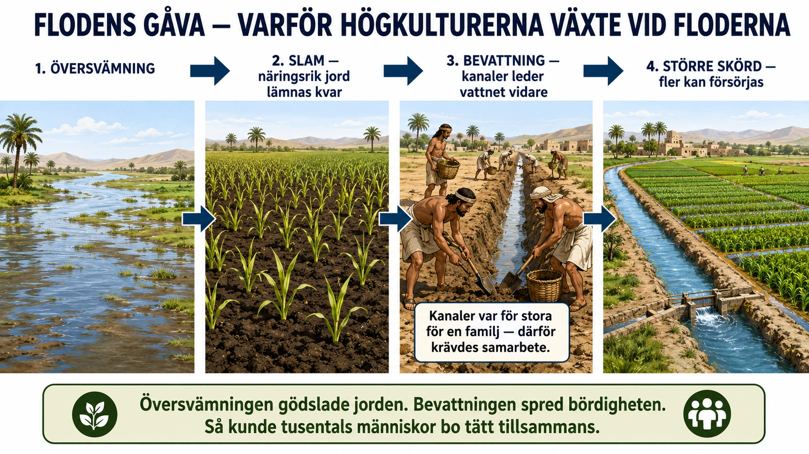
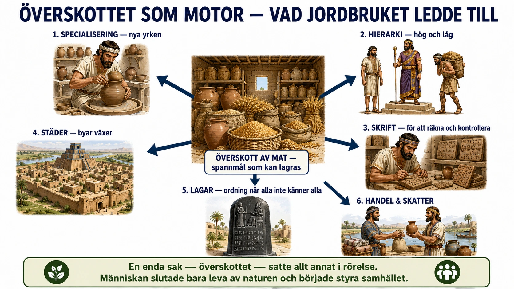
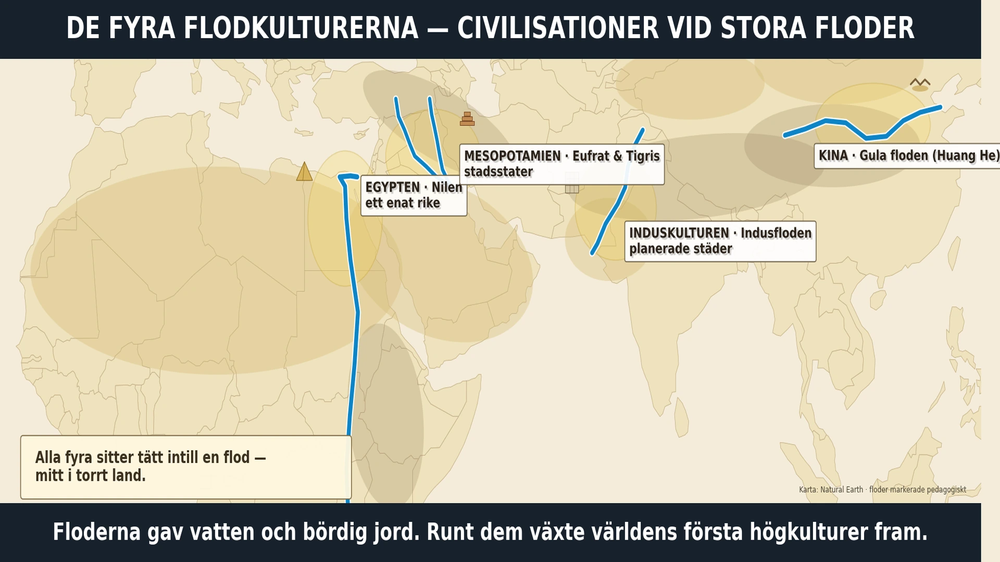

— hur floderna gjorde de första högkulturerna möjliga —
Titta på bilden innan du läser vidare — följ de fyra stegen från vänster till höger:

Under nästan hela människans historia levde människor som jägare och samlare. De jagade djur, fiskade och plockade bär, rötter och nötter. Eftersom maten fanns på olika ställen var de tvungna att flytta runt hela tiden. Därför byggde de inga städer.
För ungefär 10 000 år sedan hände något nytt. På vissa platser lärde sig människor att odla växter och hålla tama djur. I stället för att bara leta efter mat började de själva odla den. Denna stora förändring kallas jordbruksrevolutionen.
När människor odlade måste de stanna kvar på samma plats. De behövde så, vänta och skörda, och ta hand om sina djur. Därför blev de bofasta. De byggde hus, byar och förråd, och kunde spara mat till framtiden.
Många av de första jordbrukarna bosatte sig vid stora floder, som Nilen och Eufrat. Floderna gav vatten, men de gjorde också något mer. Ibland svämmade de över. När vattnet drog sig tillbaka lämnade det kvar ett lager slam som var fullt av näring. Det gjorde jorden bördig, så att grödorna växte bättre.
Med tiden ville människorna själva bestämma över vattnet. De byggde dammar, vallar och kanaler för att leda vattnet dit de behövde det. Det kallas bevattning.
Men att bygga kanaler var för stort för en enda familj. Många måste hjälpas åt och komma överens: vem gräver, vem får vattnet först, hur ska maten delas? Därför behövdes ledare och regler.
När skördarna blev större behövde inte alla arbeta med mat. Vissa kunde i stället bli hantverkare, präster eller soldater. Det kallas specialisering. Så förändrade jordbruket hela samhället — och blev grunden för de första städerna och högkulturerna.
Under större delen av människans historia levde människor som jägare och samlare. De jagade djur, fiskade och samlade växter, bär, rötter och nötter. De var ofta tvungna att flytta mellan olika platser för att hitta mat. Därför byggde de inte stora städer eller fasta samhällen på samma sätt som senare människor gjorde.
För ungefär 10 000 år sedan började något förändras. På vissa platser i världen upptäckte människor att de kunde odla växter och hålla tama djur. I stället för att bara leta efter mat i naturen började de själva producera mat. Detta brukar kallas jordbruksrevolutionen.
Detta var en av de största förändringarna i människans historia.
När människor började odla behövde de stanna längre på samma plats. De behövde så frön, vänta på att grödan skulle växa och sedan skörda. De behövde också ta hand om djur och skydda sina förråd.
Det gjorde att människor blev mer bofasta. De började bygga byar, hus, förråd och inhägnader. De kunde samla mat för framtiden och försörja fler människor än tidigare.
Men jordbruket var också osäkert. Om det blev torka kunde skörden förstöras. Om det regnade för mycket kunde fälten översvämmas. Därför blev människorna tvungna att förstå naturen bättre och samarbeta mer.
De första stora jordbrukssamhällena växte ofta fram vid stora floder. Exempel är Nilen i Egypten, Eufrat och Tigris i Mesopotamien, Indusfloden i Indien och Gula floden i Kina. Dessa samhällen brukar kallas flodkulturer.
Floderna var viktiga eftersom de gav vatten till människor, djur och åkrar. Men floderna gjorde också något mer: de svämmade över.
När en flod svämmade över rann vatten ut över marken bredvid floden. När vattnet sedan sjönk undan lämnades ett lager av slam kvar. Slammet innehöll näring som gjorde jorden mycket bördig. Det betydde att grödorna kunde växa bättre.
På så sätt kunde översvämningar vara både farliga och nyttiga. De kunde förstöra hus och åkrar om de kom för kraftigt, men de kunde också ge ny näring till jorden.
Efter hand började människor försöka kontrollera flodernas vatten. De ville inte bara vänta på att naturen skulle ge rätt mängd vatten. De ville kunna använda vattnet när de behövde det.
Därför byggde de dammar, vallar och kanaler.
En damm kunde samla upp vatten. En vall kunde skydda åkrar och byar från för stora översvämningar. Kanaler kunde leda vatten från floden till åkrar som låg längre bort.
Detta kallas bevattning. Bevattning betyder att människor leder vatten till odlingar för att grödorna ska kunna växa.
Med hjälp av bevattning kunde jordbruket bli mycket mer effektivt. Fler åkrar kunde användas. Skördarna kunde bli större. Det blev lättare att försörja en växande befolkning.
Att bygga dammar och kanaler var inget en ensam familj kunde göra själv. Det krävde många människor. Någon behövde gräva. Någon behövde bära material. Någon behövde planera arbetet. Någon behövde bestämma var kanalerna skulle gå och hur vattnet skulle fördelas.
Därför blev samarbete mycket viktigt.
Människorna behövde komma överens om frågor som: Vem ska bygga kanalen? Vem ska reparera den när den går sönder? Vem får använda vattnet först? Hur ska maten från skördarna fördelas? Vem bestämmer om människor inte är överens?
När jordbruket blev större behövdes därför också mer organisation. Det blev början på mer avancerade samhällen med ledare, regler, arbetsfördelning och senare städer och stater.
När skördarna blev större behövde inte alla människor arbeta med att skaffa mat hela tiden. Vissa kunde i stället bli hantverkare, soldater, präster, skrivare eller handelsmän. Detta kallas specialisering.
Jordbruket ledde alltså inte bara till mer mat. Det förändrade hur människor levde tillsammans. Människor blev bofasta. Byar växte till städer. Samarbete blev nödvändigt. Ledare och regler blev viktigare. Samhället blev mer organiserat.
Övergången från jägare och samlare till jordbrukare var därför ett stort steg i historien. Särskilt vid de stora floderna lärde sig människor att utnyttja naturen, styra vatten och samarbeta i stora projekt. Det var grunden för de första högkulturerna.
Vi brukar berätta om jordbruket som ett stort framsteg: människan slutade jaga, började odla, byggde städer och skapade civilisation. Ordet jordbruksrevolution förstärker känslan av ett plötsligt, tydligt steg framåt. Men ju mer historiker och arkeologer har grävt — bokstavligt talat — desto mer komplicerad har berättelsen blivit. Flera av de saker vi lärt oss om jordbruket är i själva verket omtvistade.
Var det en "revolution"? En revolution låter som något snabbt. Men övergången till jordbruk tog inte år eller årtionden, utan flera tusen år. Människor jagade och odlade parallellt under långa perioder, provade sig fram och återgick ibland till jakt. Begreppet "revolution" myntades av arkeologen Gordon Childe på 1900-talet och har fastnat — men många forskare tycker att det ger fel bild av tempot. Kanske vore "den långsamma omställningen" en ärligare beskrivning.
Var det verkligen bättre? Här finns kanske den mest överraskande frågan. Om man undersöker skelett från tidiga jordbrukare och jämför dem med jägare och samlare från samma områden, ser man ofta att jordbrukarna var kortare, hade sämre tänder, fler tecken på sjukdom och slet hårdare. En ensidig kost på några få grödor gav sämre näring än den varierade maten en samlare fick, och jägare och samlare arbetade ofta färre timmar per dag för att skaffa mat. Forskaren Jared Diamond har till och med kallat jordbruket "det värsta misstaget i mänsklighetens historia".
Hur kan då jordbruket ha "vunnit"? Svaret är att det som var dåligt för den enskilda människan var framgångsrikt för arten. Jordbruk gav mer mat per yta, och mer mat betyder att fler barn överlever. En jordbruksby kunde försörja långt fler människor än samma yta vildmark. Grupper som odlade blev alltså fler och trängde undan dem som inte gjorde det — även om varje enskild jordbrukare kanske hade det tyngre. Historien "valde" jordbruket, men inte för att det gjorde människor lyckligare.
Varför gjorde de det då? Om jordbruket var hårdare, varför började människor alls med det? Det finns ingen enkel förklaring, utan flera konkurrerande teorier. En handlar om klimatet: när den senaste istiden tog slut blev världen varmare och stabilare, och vilda gräs som vete och korn blev vanligare och lättare att odla. En annan handlar om befolkningen: när människorna blev fler räckte inte det vilda att jaga och samla, och odling blev ett sätt att få fram mer mat.
En tredje, mer oväntad teori kommer från platsen Göbekli Tepe i dagens Turkiet. Där byggde människor stora stenmonument — ett slags tempel — för ungefär 11 000 år sedan, alltså innan de riktigt börjat med jordbruk. Kanske var det inte maten som kom först, utan tron och samlingen: människor samlades för att bygga och fira tillsammans och behövde då mat till många på ett ställe, vilket kan ha drivit fram odlingen. Om det stämmer byggde människan templet före staden, inte tvärtom. Historikern Yuval Noah Harari har vänt på frågan provocerande: kanske var det inte människan som tämjde vetet, utan vetet som tämjde människan och band den vid åkern.
En sak, eller flera? Länge trodde man att jordbruket uppfanns på ett enda ställe och sedan spreds därifrån. I dag vet vi att människor uppfann jordbruk oberoende av varandra på flera platser i världen, från Kina till Amerika, utan att känna till varandra. Det var alltså inte en idé som spreds, utan något människor kom fram till gång på gång.
Och floderna? Standardtexten säger att jordbruket växte fram vid de stora floderna. Det stämmer för de stora, tätbefolkade högkulturerna — men själva odlandet började ofta i kuperade områden en bit från floderna, där vilda sädesslag redan växte. Det var senare, när människor lärt sig bevattna, som de riktigt stora samhällena samlades vid floderna. Där kunde slammet och bevattningen ge så stora skördar att tusentals människor kunde bo tätt tillsammans. Floderna var alltså inte där jordbruket föddes, men där det växte sig störst — och det är just den täta samlingen av människor som senare gör skrift, lagar och kungar möjliga.
Priset för överskottet. Till sist är det värt att se att det överskott som gjorde civilisationen möjlig också hade en baksida. När mat kunde lagras kunde den också ägas — och den som ägde mycket fick makt över den som ägde lite. Skillnaderna mellan rika och fattiga växte. Att bo tätt tillsammans med djur gav dessutom nya sjukdomar, och fyllda spannmålsförråd var något andra kunde vilja ta, vilket kunde leda till organiserat våld och krig. Samma överskott som byggde de första städerna byggde alltså också de första skillnaderna i makt.
Jordbruket var därför varken bara ett framsteg eller bara ett misstag. Det var en omställning som gav oss städer, skrift och konst — men också ojämlikhet, sjukdom och krig. Kanske är det just det som gör frågan intressant: en av de största vändpunkterna i vår historia har inget enkelt facit.
Titta på bilden innan du läser vidare — utgå från mitten och följ pilarna utåt:

Jordbruket gav något som jägarna och samlarna sällan hade haft: ett överskott. När en skörd blev bra fanns det mer mat än man behövde för stunden, och särskilt spannmål som vete och korn kunde sparas länge i förråd. Det gjorde livet tryggare — men det väckte också nya frågor. Vem ägde maten i lagret? Vem skulle vakta den, och vem bestämde hur den fördelades? Där fanns fröet till makt.
Överskottet fick en viktig följd: alla behövde inte längre arbeta med mat. Några kunde i stället bli hantverkare, byggare, präster, soldater eller handelsmän. Att människor på så sätt fick olika yrken kallas specialisering. Men när uppgifterna blev olika blev också makten olika. En kung, präst eller rik jordägare kunde stå högt, medan bönder, arbetare och slavar stod lågt. Samhället fick en hierarki — en trappa där människor placerades högre eller lägre. Ofta fick män mer makt över jord, arv och beslut, medan kvinnornas ställning blev mer begränsad.
Ju större samhällena blev, desto mer måste man hålla reda på. Hur mycket spannmål fanns i lagret? Vem hade betalat skatt? För att minnas allt detta utvecklades skrift. De första skrivtecknen handlade sällan om sagor, utan om räkning och bokföring. Den som kunde skriva och räkna kunde hjälpa makthavarna att styra samhället, och skrivaren blev därför en viktig person.
Byar växte till städer med tempel, murar och marknader, och i städerna behövdes ledare som kunde organisera arbetet och lösa konflikter. När alla inte längre kände alla räckte det inte med gamla traditioner — det behövdes lagar. Ett känt exempel är kung Hammurabis lagar från Mesopotamien, som ristades in på en stor sten på 1700-talet f.Kr. Det nya var inte varje regel, utan själva idén: kungen skulle skapa ordning genom skrivna lagar. Samtidigt visar lagarna att samhället var ojämlikt — straffet blev olika beroende på om du var rik, fattig eller slav.
Så blev jordbruket grunden för de första högkulturerna. Människan levde inte längre bara av naturen — hon började organisera och styra hela samhället.
När människan började odla förändrades hela samhället. Jordbruket gjorde att människor kunde få mer mat än tidigare. Särskilt vid de stora floderna, där översvämningar gav bördig jord och vatten kunde ledas ut till åkrarna, blev skördarna ofta stora.
Detta fick flera viktiga konsekvenser.
En av de viktigaste förändringarna var att jordbruket kunde skapa ett överskott av mat.
Ett överskott betyder att man producerar mer än man behöver för stunden. Om bönderna fick en bra skörd kunde en del av spannmålet sparas i förråd. Spannmål som vete och korn var särskilt viktigt, eftersom det kunde lagras länge.
Detta gjorde samhället tryggare. Om nästa skörd blev sämre kunde människorna använda maten från lagren. Men överskottet skapade också nya frågor: Vem äger maten? Vem får ta del av lagret? Vem ska vakta förråden? Vem bestämmer hur maten ska fördelas?
När det fanns stora spannmålslager blev det därför viktigt med kontroll, regler och ledare.
När jordbruket gav mer mat behövde inte alla människor arbeta med jakt, samlande eller odling. Vissa kunde börja arbeta med andra saker. Detta kallas specialisering.
Specialisering betyder att människor får olika yrken och uppgifter i samhället. Några kunde bli:
Detta gjorde samhället mer avancerat. Men det gjorde också att människor fick olika mycket makt och status.
När människor fick olika yrken uppstod också en hierarki. En hierarki betyder att människor placeras högre eller lägre i samhället.
Alla hade inte längre samma ställning. En kung, präst eller rik jordägare kunde få mycket mer makt än en vanlig bonde. De som kontrollerade maten, religionen, lagen eller militären fick ofta hög status.
Längre ner i samhället fanns bönder, arbetare och ibland slavar. De gjorde mycket av det tunga arbetet men hade ofta mindre makt.
Det uppstod också tydligare skillnader mellan män och kvinnor. I många jordbrukssamhällen fick män mer makt över jord, boskap, arv och politiska beslut. Kvinnor hade fortfarande viktiga roller i familjen, jordbruket och hushållet, men deras ställning blev ofta mer begränsad när samhället blev mer organiserat och ägande blev viktigare.
Det betyder inte att alla samhällen såg exakt likadana ut. Men en vanlig konsekvens av de tidiga jordbrukssamhällena var att skillnaderna mellan människor ökade.
När samhällena blev större behövde människor hålla reda på mer information. Det räckte inte längre att bara minnas allt.
Man behövde veta: Hur mycket spannmål finns i lagret? Vem har lämnat in skatt? Hur mycket mat ska delas ut? Hur många arbetare behövs till kanalen? Hur mycket mark tillhör en viss familj eller ett tempel?
Därför utvecklades skriftspråk. I de första flodkulturerna handlade skrivandet ofta inte om sagor eller böcker, utan om matematik, räkning och bokföring.
Skrivarna räknade säckar med spannmål, djur, mark, skatter och arbetsdagar. De skrev ner informationen så att ledare, tempel och städer kunde hålla ordning på sina resurser.
Skrivaren blev därför en mycket viktig person. Den som kunde skriva och räkna kunde hjälpa makthavarna att kontrollera samhället. Skrivare hade ofta hög status, eftersom de hade kunskap som de flesta människor saknade.
Skriftspråket blev alltså ett verktyg för organisation och makt.
När jordbruket blev effektivare kunde fler människor bo på samma plats. Små byar kunde växa till större byar och till slut till städer.
I städerna fanns fler yrken, mer handel och större byggnader. Där kunde det finnas tempel, palats, murar, marknadsplatser och förråd.
Men ju större städerna blev, desto mer behövdes ledare. Någon behövde organisera arbetet med kanaler, bestämma över spannmålslagren, skydda staden och lösa konflikter.
Därför fick vissa ledare stor makt. Präster kunde få makt eftersom religionen var viktig och templen ofta ägde mark och förråd. Kungar kunde få makt eftersom de kunde fatta beslut, samla in skatt och leda soldater.
Militären blev också viktigare. När städer och riken hade matförråd, mark och rikedomar fanns det mer att försvara – men också mer att erövra. Därför blev soldater, vapen och stadsmurar viktiga delar av de första stora samhällena.
När människor levde i små grupper kunde regler ofta bygga på tradition och personliga relationer. Men när samhällena blev större räckte inte det. Alla kände inte alla. Konflikter blev vanligare.
Därför blev lagar viktiga.
Lagar kunde handla om ägande, handel, skulder, arv, straff, familj, jordbruk och arbete. De visade vad som var tillåtet och vad som var förbjudet. De visade också vilka straff som skulle gälla om någon bröt mot reglerna.
Ett känt exempel är Hammurabis lag från Babylonien i Mesopotamien. Hammurabi var kung på 1700-talet f.Kr. Hans lagar skrevs ner på en stor sten. Det viktiga var inte bara exakt vad lagarna sa, utan att de visade något nytt: staten och kungen ville skapa ordning genom skrivna regler.
Samtidigt visar Hammurabis lag att samhället var ojämlikt. Straffen kunde vara olika beroende på om personen var rik, fattig eller slav. Lagen skapade alltså ordning, men den visade också att människor inte hade samma värde i samhället.
När vissa områden fick överskott av mat kunde de byta till sig andra varor. Det kunde vara sten, trä, metaller, tyg, salt eller lyxvaror. På så sätt växte handeln.
Men handel och större samhällen krävde också skatter. Ledare behövde samla in mat, arbete eller varor för att kunna bygga kanaler, tempel, murar och palats. Skatter kunde också användas för att försörja präster, skrivare och soldater.
Samtidigt ökade risken för konflikter. När människor ägde mark, förråd, djur och rikedomar kunde de också börja bråka om dem. Städer och riken kunde hamna i krig om vatten, jord och kontroll över handel.
Jordbruket förändrade människans liv på djupet. Det gav mer mat och gjorde det möjligt för människor att bo kvar på samma plats. Men det skapade också nya behov av planering, kontroll och samarbete.
De viktigaste konsekvenserna var: Människor kunde skapa överskott av mat. Alla behövde inte längre arbeta med matproduktion. Nya yrken växte fram. Skillnaderna mellan människor ökade. Skriftspråk och matematik utvecklades för att hålla ordning på resurser. Byar växte till städer. Ledare, präster, kungar och militär fick större betydelse. Lagar behövdes för att skapa ordning i större samhällen.
På så sätt blev jordbruket grunden för de första högkulturerna. Människan började inte bara leva av naturen – hon började organisera, kontrollera och förändra hela samhället.
Standardtexten berättar en tydlig kedja: överskott ledde till specialisering, specialisering till hierarki, större samhällen till skrift och lagar. Kedjan stämmer i stora drag — men varje länk i den har blivit en fråga som forskare fortfarande diskuterar. Ibland bekräftar de nya fynden berättelsen på ett nästan förbluffande sätt. Ibland vänder de upp och ner på den.
Skriften föddes verkligen ur räkningen. Här ger arkeologin din text starkt stöd — och en oväntad detalj. Långt innan de första skrivtecknen använde människor i Mesopotamien små lerpjäser i olika former: en kon för ett visst mått spannmål, en kula för ett annat, en cylinder för ett djur. Pjäserna var ett slags räknemarker. När en handel skulle bekräftas lade man in dem i en ihålig lerboll och tryckte på ytan hur många och vilka som fanns inuti — så att ingen kunde fuska. Efter ett tag insåg någon att man inte behövde själva pjäserna alls: det räckte med tecknen på ytan. Där, ur bokföringen av säd och boskap, växte kilskriften fram för omkring 5 000 år sedan. Forskaren Denise Schmandt-Besserat är den som knutit ihop den här kedjan. Skriften uppfanns alltså inte för att berätta historier eller skriva dikter — den uppfanns för att hålla ordning på vem som ägde vad. Det är precis vad standardtexten säger, och verkligheten är om möjligt ännu mer konkret än så.
Men var Hammurabis "lag" verkligen en lag? Här blir det mer komplicerat. Vi kallar den gärna världens första lagsamling, men om man läser den noga upptäcker man något underligt: i tusentals bevarade domar och rättegångsprotokoll från Babylonien är det nästan ingen som hänvisar till Hammurabis lagar. Domarna dömde, men de citerade inte stenen. Det har fått historiker som Jean Bottéro att fråga sig om texten alls fungerade som en lagbok i vår mening. Kanske var den snarare ett monument: en bild av kungen som en rättvis härskare, rest för gudarna och eftervärlden mer än för domstolarna. Överst på stenen står Hammurabi framför solguden Shamash och tar emot rätten att härska. Budskapet är lika mycket "se vilken rättvis kung jag är" som "så här ska ni döma". Det gör inte texten mindre viktig — men det påminner om att makt på den här tiden lika gärna visades upp som utövades.
Varför förlorade kvinnorna mark? Standardtexten nämner att kvinnornas ställning ofta blev mer begränsad i jordbrukssamhällena. Men varför? En förklaring som historikern Gerda Lerner fört fram knyter det direkt till överskottet och ägandet. Så länge människor levde av det de samlade fanns det inte mycket att ärva. Men när jorden, djuren och förråden blev värdefull egendom blev det plötsligt viktigt vem som ägde dem och vem som ärvde dem — och därmed viktigt att kontrollera vilka barn som föddes och till vem. I många jordbrukssamhällen band det kvinnorna hårdare till hushållet och gav männen kontroll över arv och egendom. Om det stämmer var mäns och kvinnors olika ställning inte något "naturligt", utan något som växte fram tillsammans med ägandet — ännu en följd av samma överskott som gav oss städer och skrift.
Och måste överskott alltid leda till kungar? Den kanske största frågan gäller själva kärnan i kedjan: att mer mat och större samhällen mer eller mindre automatiskt föder hierarki och härskare. Länge tog forskarna det för givet. På senare år har antropologen David Graeber och arkeologen David Wengrow utmanat bilden. De pekar på tidiga samhällen som var stora och tätbefolkade men ändå inte verkar ha haft kungar, palats eller tydliga makttrappor. Ett exempel är Çatalhöyük i dagens Turkiet, en av världens äldsta kända städer, där tusentals människor bodde för omkring 9 000 år sedan i hus som såg påfallande lika ut — inga jättepalats, inga tempel som tronar över resten. Andra samhällen tycks ha växlat mellan olika ordningar med årstiderna, med starkare ledare vissa delar av året och mer jämlikhet under andra. Slutsatsen deras forskning pekar mot är att jordbruk och överskott gjorde hierarki möjlig — men inte oundviklig.
Var lämnar det oss? Ungefär så här: kedjan standardtexten beskriver är verklig, och i Mesopotamien och Egypten ledde den faktiskt fram till kungar, skrivare, skatter och lagar. Men det var ingen naturlag som tvingade fram just den utvecklingen. Överskottet var en möjlighet, inte ett öde. Att människor gång på gång ändå landade i ojämlikhet säger något om hur frestande makten över maten var — men historien om forntiden är inte bara berättelsen om hur civilisationen "måste" bli, utan om alla de val människor gjorde på vägen dit. Och just för att det var val, kunde de i princip ha blivit annorlunda.
Titta på kartan innan du läser vidare — hitta de fyra floderna:

De första stora civilisationerna växte fram vid floder. Det var ingen slump. Floderna gav vatten, fisk och bördig jord, och de var vägar att färdas och handla längs. Men floderna kunde också svämma över och förstöra. Därför måste människorna samarbeta, bygga kanaler och vallar och komma överens om vem som skötte vad. Ur det samarbetet växte större och mer organiserade samhällen.
Fyra av de viktigaste tidiga flodkulturerna låg vid var sin flod. Mesopotamien låg mellan floderna Eufrat och Tigris, i dagens Irak. Egypten växte fram längs Nilen i nordöstra Afrika. Induskulturen låg vid Indusfloden i dagens Pakistan. Och i norra Kina växte en kultur fram vid Gula floden.
De fyra kulturerna liknade varandra på många sätt, men de var också olika. Mesopotamien blev inte ett enda rike, utan flera stadsstater — städer som var som små egna länder, med egna murar och ledare. Egypten blev tidigt ett enat rike, mycket tack vare Nilen. Nilens översvämningar kom nämligen ganska regelbundet varje år och lämnade näringsrikt slam på åkrarna. Därför kallades Egypten ibland för Nilens gåva.
Egypten styrdes av en farao, som var både kung och en sorts religiös ledare — egyptierna såg honom nästan som en gud. Religionen var mycket viktig, och en av de största gudarna var solguden Ra. Egyptierna trodde på ett liv efter döden, och därför bevarade de kroppen som en mumie och byggde stora gravar. De mäktigaste faraonerna fick vila i väldiga pyramider, som fortfarande står kvar i dag.
De andra flodkulturerna hade sina egna kännetecken. Induskulturen byggde välplanerade städer med raka gator och avlopp, men vi kan ännu inte läsa deras skrift, så vi vet mindre om dem. Vid Gula floden i Kina växte en kultur fram som blev början på en mycket lång kinesisk historia.
Det viktigaste att förstå är inte att komma ihåg alla kungar och gudar. Det viktigaste är sambandet mellan geografi och samhälle: floderna gjorde jordbruk möjligt, jordbruket gav överskott, och överskottet lät städer, ledare, skrift och lagar växa fram. Floderna samlade människor till stora, sammanhållna riken. Håll den tanken — för i nästa del, i Grekland, gjorde bergen och havet precis tvärtom.
De första stora civilisationerna växte fram vid floder. Det var ingen slump. Floder gav vatten, bördig jord, fisk, transporter och möjlighet till handel. Men floderna kunde också vara farliga. De kunde svämma över, förstöra hus och dränka åkrar.
Därför behövde människorna samarbeta. De byggde dammar, kanaler och vallar. De organiserade arbete, samlade mat i förråd och skapade regler för hur vattnet och maten skulle fördelas.
Fyra av de viktigaste tidiga flodkulturerna var: Mesopotamien vid Eufrat och Tigris, Egypten vid Nilen, Induskulturen vid Indusfloden, och Kina vid Gula floden, Huang He.
Det viktiga är att förstå att dessa kulturer växte fram där naturen gjorde jordbruk möjligt – men också där människorna behövde organisera sig för att överleva.
Mesopotamien låg mellan floderna Eufrat och Tigris, i området där Irak ligger i dag. Namnet Mesopotamien betyder ungefär ”landet mellan floderna”.
Här var jorden bördig, men floderna var svåra att kontrollera. Översvämningarna kunde komma oregelbundet och vara kraftiga. Därför behövde människorna bygga kanaler och skyddsvallar för att leda vattnet till åkrarna.
Mesopotamien blev inte ett enat rike från början. I stället växte det fram flera stadsstater. En stadsstat var en stad med området runt omkring, ungefär som ett litet eget land. Varje stadsstat hade egna murar, egna ledare, egna tempel och egna åkrar.
I Mesopotamien styrde flera olika folk under olika tider. Bland de viktigaste fanns sumererna, babylonierna och assyrierna.
Sumererna utvecklade tidiga städer och ett av världens äldsta skriftspråk, kilskriften. Babylonierna är kända för lagar och stora städer, särskilt Babylon. Assyrierna byggde ett starkt militärt rike och blev kända för sin krigsmakt.
Mesopotamien var också viktigt för teknisk utveckling. Här användes hjulet tidigt, vilket gjorde transporter lättare. Brons blev viktigt för redskap och vapen, till exempel svärd. Brons är en metallblandning som är hårdare än koppar och därför bättre till verktyg och vapen.
Mesopotamien visar tydligt hur floder kunde skapa rikedom – men också konflikter. När städer fick matförråd, jord och vatten blev det viktigt att försvara sig. Därför blev murar, soldater och ledare viktiga.
Egypten växte fram längs Nilen i nordöstra Afrika. Nilen var helt avgörande för Egyptens utveckling. Utan Nilen hade stora delar av Egypten varit öken.
Varje år svämmade Nilen över. När vattnet sjönk undan lämnade det kvar näringsrikt slam på åkrarna. Det gjorde jorden mycket bördig. Därför kallade man ibland Egypten för Nilens gåva.
Till skillnad från Mesopotamiens floder var Nilens översvämningar ganska regelbundna. Det gjorde det lättare för egyptierna att planera jordbruket. De kunde räkna med när floden skulle stiga och när det var dags att så.
Egypten blev tidigt ett starkt och enat rike. Landet styrdes av en farao. Farao var både kung och religiös ledare. Egyptierna såg honom som en person med kontakt med gudarna. Därför hade farao mycket stor makt.
Religionen var central i Egypten. En av de viktigaste gudarna var Ra, solguden. Solen var viktig eftersom den gav ljus, värme och liv. Egyptierna kopplade naturen, floden, solen och livet efter döden till sin religion.
Egyptierna är också kända för sina pyramider. Pyramiderna byggdes som gravar åt faraoner. De visar hur organiserat det egyptiska samhället var. För att bygga pyramider krävdes planering, arbetskraft, matematik, transport och ledning.
Egyptierna trodde på ett liv efter döden. Därför försökte de bevara kroppen genom att göra en mumie. Kroppen torkades och lindades för att kunna bevaras länge. Detta visar hur starkt religionen påverkade deras syn på döden.
Egyptierna utvecklade också ett skriftspråk som kallas hieroglyfer. Hieroglyfer bestod av bildtecken och användes bland annat på tempel, gravar och viktiga dokument. De skrev också på papyrus, ett material som tillverkades av växten papyrus som växte vid Nilen. Papyrus fungerade ungefär som ett tidigt papper.
Egypten visar hur en flod kunde hålla ihop ett helt samhälle. Nilen gav vatten och bördig jord. Den fungerade också som en transportväg genom landet. Människor, varor och information kunde färdas längs floden. På så sätt blev Egypten mer sammanhållet än många andra tidiga kulturer.
Induskulturen växte fram vid Indusfloden, i områden som i dag ligger i Pakistan och nordvästra Indien. Floden gav vatten till jordbruket och gjorde det möjligt för människor att bo i stora samhällen.
Induskulturen är särskilt känd för sina välplanerade städer. Två viktiga städer var Harappa och Mohenjo-Daro. Städerna hade raka gator, hus av tegel och avancerade avloppssystem. Det visar att människorna hade god kunskap om byggande, vatten och stadsplanering.
Jordbruket var grunden. Människorna odlade bland annat spannmål och höll djur. De handlade också med andra områden, bland annat Mesopotamien. Det visar att flodkulturerna inte var helt isolerade från varandra.
En sak som gör Induskulturen svår att förstå är att deras skrift ännu inte har tolkats säkert. Forskare har hittat tecken på sigill och föremål, men vi kan inte läsa deras texter på samma sätt som vi kan läsa egyptiska hieroglyfer eller mesopotamisk kilskrift.
Därför vet vi mindre om Induskulturens kungar, gudar och politiska system än om Egypten och Mesopotamien. Det betyder inte att kulturen var mindre avancerad. Det betyder att vi har svårare att förstå den, eftersom vi saknar läsbara texter.
Induskulturen visar att en högkultur inte måste vara mest känd för stora kungar eller krig. Den kan också vara viktig genom planerade städer, handel, teknik och fungerande vardagsliv.
Den tidiga kinesiska civilisationen växte fram vid Gula floden, eller Huang He, i norra Kina. Floden kallas Gula floden eftersom den för med sig gulaktig jord, så kallad lössjord. Denna jord kunde göra marken mycket bördig.
Men Gula floden var också farlig. Den kunde ändra lopp och orsaka stora översvämningar. Därför har den ibland kallats ”Kinas sorg”. Människorna behövde bygga vallar och organisera arbetet för att skydda åkrar och byar.
Precis som i andra flodkulturer blev jordbruket grunden för större samhällen. Människor odlade, lagrade mat och byggde upp byar och städer. Ledare fick makt genom att organisera vatten, jordbruk, försvar och religion.
Kina kom med tiden att utveckla en mycket lång och sammanhängande civilisation. En viktig del av den kinesiska kulturen var respekt för familj, ordning och tradition. Senare blev tänkaren Konfucius mycket viktig. Han levde långt efter de första flodkulturerna, men hans idéer kom att påverka Kina under mycket lång tid. Konfucius betonade plikt, respekt, utbildning och att samhället skulle fungera genom ordning och ansvar.
Kina är också känt för jade, en vacker och hård sten som användes till smycken, föremål och religiösa symboler. Jade blev ett viktigt material i kinesisk kultur.
Ett annat känt exempel från Kinas historia är terrakottaarmén. Den består av tusentals lerfigurer av soldater som begravdes med kejsaren Qin Shi Huangdi. Terrakottaarmén hör till en senare period än de första flodkulturerna, men den visar hur mäktigt och organiserat Kina senare blev.
Kina blev också viktigt för många uppfinningar som påverkade resten av världen. Flera av dessa uppfinningar utvecklades långt efter de allra första flodkulturerna, men de hör till Kinas stora historiska betydelse. Exempel är krut, siden, papper, kompass, tryckta böcker, skottkärra och akupunktur.
Dessa kunskaper och varor spreds senare längs handelsvägar och kom att påverka även Europa. Siden blev en eftertraktad lyxvara. Papper och tryckteknik påverkade spridningen av kunskap. Kompassen blev viktig för sjöfart. Krutet förändrade krigföringen.
Kina visar därför både hur en civilisation kunde växa fram vid en flod och hur idéer, teknik och varor senare kunde spridas över stora delar av världen.
De fyra flodkulturerna låg i olika delar av världen, men de hade mycket gemensamt. Alla växte fram vid stora floder. Alla byggde på jordbruk. Alla behövde kontrollera vatten. Alla utvecklade större byar eller städer. Alla behövde ledare, regler och organisation. Alla fick någon form av arbetsfördelning. Alla skapade överskott av mat. Alla utvecklade handel och hantverk.
Floderna gav alltså möjligheter, men de skapade också problem. För att kunna använda floderna behövde människor samarbeta. Därför blev flodkulturerna början på mer organiserade samhällen.
Det fanns också viktiga skillnader. Mesopotamien bestod länge av flera stadsstater och hade många olika folk som styrde under olika tider. Egypten blev mer sammanhållet eftersom Nilen fungerade som en tydlig väg genom landet. Induskulturen hade avancerade städer, men vi vet mindre om deras styre eftersom deras skrift inte har tolkats säkert. Kina utvecklades kring Gula floden och blev grunden för en mycket lång civilisation med stor betydelse för senare uppfinningar, idéer och handel.
De fyra flodkulturerna var några av världens första stora civilisationer. De växte fram vid floder eftersom floderna gav vatten, bördig jord och möjlighet till jordbruk.
Mesopotamien växte fram vid Eufrat och Tigris. Egypten växte fram vid Nilen. Induskulturen växte fram vid Indusfloden. Kina växte fram vid Gula floden, Huang He.
Det viktigaste att förstå är inte att memorera många kungar och gudar. Det viktigaste är att se sambandet mellan geografi och samhälle.
Floderna gjorde jordbruk möjligt. Jordbruket gav överskott av mat. Överskottet gjorde att städer, yrken, ledare, lagar, skrift och handel kunde växa fram. Därför blev floderna grunden för de första högkulturerna.
Berättelsen om flodkulturerna är nästan för prydlig. Floden ger vatten och slam → jordbruket ger överskott → överskottet föder städer, skrivare, kungar och lagar. Fyra gånger, på fyra floder, samma mönster. Det är så rent att det känns som en naturlag: ge människan en stor flod, och en högkultur växer fram nästan av sig själv. Men stämmer det? Bestämde geografin verkligen allt — eller är det vi som i efterhand lägger ett snyggt mönster över en rörigare verklighet?
Idén om vattenrikena. En forskare, Karl Wittfogel, drev tanken långt. De stora floderna, menade han, krävde enorma bevattningsanläggningar, och att bygga och sköta dem krävde att någon kunde kommendera tusentals arbetare, hålla räkning och fördela vattnet rättvist. Ur just det behovet växte mäktiga, kontrollerande stater fram — han kallade dem "hydrauliska imperier", vattenrike. Poängen var slående: floden skapade inte bara mat, utan makt. Den som styrde vattnet styrde människorna. Idén passar Egypten och Mesopotamien som hand i handske, och den är lätt att bli förälskad i.
Men verkligheten krånglar. Ju noggrannare arkeologer grävt, desto mer har idén krackelerat. På många håll sköttes bevattningen inte uppifrån av en kung, utan lokalt — av byar och grannar som grävde och underhöll sina egna kanaler utan att någon farao behövde befalla det. Och på sina ställen dök de starka staterna upp före de riktigt stora bevattningssystemen, inte tack vare dem. Om kungarna redan fanns innan jättekanalerna byggdes, kan kanalerna inte ha skapat kungarna. Vattnet gjorde alltså makt möjlig — men tvingade inte fram den.
Motexemplet vid Indus. Det tydligaste motexemplet ligger vid Indusfloden. Där byggde människor några av forntidens mest välplanerade städer — men de har inte lämnat efter sig några praktfulla kungagravar, inga palats som tronar över resten, ingen tydlig gudakung. En hel högkultur tycks ha klarat sig utan de mäktiga härskare som mönstret säger att floderna "måste" föda. Samma sorts flod, samma sorts överskott — men en helt annan sorts samhälle. (Mer om den gåtan i djupdykningen.)
Och "de fyra" är i sig en förenkling. Att just fyra flodkulturer räknas upp beror mer på att det blir lätt att lära sig än på att verkligheten var så prydlig. Det fanns tidiga högkulturer på fler håll, och de fyra var inte fyra likadana kopior av varandra. De var inte heller isolerade öar: vi vet att Indus och Mesopotamien handlade med varandra över långa avstånd, så idéer och varor rörde sig mellan dem. Verkligheten var rörigare och mer sammanflätad än listan antyder.
Var lämnar det oss? Ungefär så här: geografin var ingen liten sak. Utan floderna hade inga av dessa högkulturer växt fram där de gjorde — så mycket är sant. Men floden bestämde inte hur samhället skulle se ut. Den öppnade en möjlighet, och sedan gjorde människorna olika saker med den: enat rike i Egypten, konkurrerande stadsstater i Mesopotamien, kunglösa planstäder vid Indus. Geografin satte scenen, men människorna skrev pjäsen.
Och det är värt att minnas när vi snart lämnar floderna. För i Grekland finns inga stora floder som samlar — där finns berg och hav som splittrar. Ändå växer där fram en av historiens mest inflytelserika kulturer. Om geografin verkligen bestämde allt, borde det inte kunna hända. Att det ändå gör det är just poängen: samma fråga — hur formar landet människan? — får ett helt annat svar på andra sidan Medelhavet.
Laddar övningskort…
Laddar frågor ...